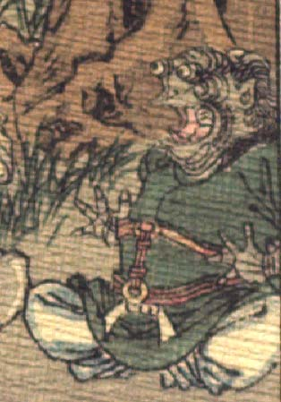

蛙を思わせる鬼。頭頂は禿げ、後頭部から髪が生えている。額の上に付いた目玉は飛び出し、耳は尖っている。鼻はなく、口を大きく開いている。異国風の緑色の上着と白い股引を着て、座っている。両手の指を大きく開き、驚いたような仕草をしている。
著作者：J.Dautremer／出典：親書誌：U426_nichibunken_0123：Le vieillard et les démons／日付：2006／資源識別子：U426_nichibunken_0123_0004_0006
Copyright (c)2010- International Research Center for Japanese Studies, Kyoto, Japan. All rights reserved.